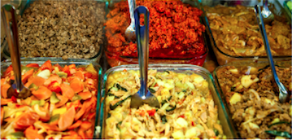
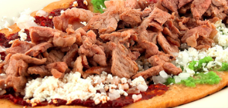
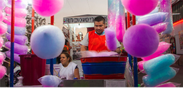
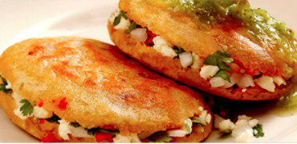
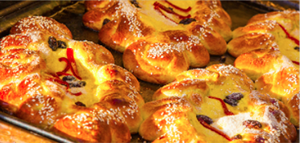
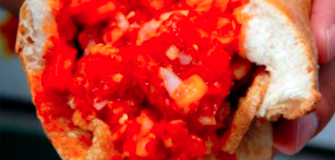
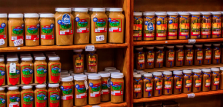
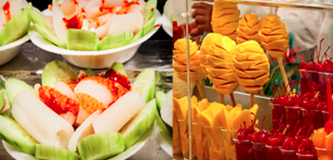
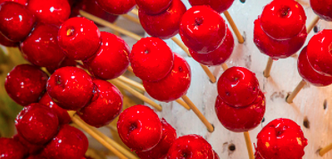

<div class=" no-navbar no-toolbar views">
  <!-- Your main view, should have "view-main" class -->
  <div class="view">
    <!-- Top Navbar-->
    <div class="navbar theme-teal" style="background-color:#fc9a00 !important">
      <div class="navbar-inner">
        <div class="left sliding">
          <a href="#" class="back link" style="z-index:300;"> </a>
        </div>
        <div class="center sliding">
              
        </div>
      </div>
    </div>
        <!-- Pages container, because we use fixed-through navbar and toolbar, it has additional appropriate classes-->

        <div class="pages " >
            <!-- Page, "data-page" contains page name -->
            <div class="page  no-toolbar"  data-page="gastronomia">
                <!-- Scrollable page content -->
                <div class="page-content">
<div class="list-block cards-list ">
  <ul>
    <li class="">
      <div class=" titlegastronomiathin">FESTIVAL GASTRONÓMICO</div>
      <div class="">
        <div class="card-content-inner grayfont" style="text-align:center;"> La gastronomía de la Feria León ofrece a sus asistentes una amplia variedad de antojos, platillos
           y postres de la región de León y otros lugares de la república que como ya
            es tradición están presentes año con año para dejarte un muy buen sabor no
             dejes de probarla te aseguramos que no te arrepentirás.</div>
      </div>
    </li>
    <li class="card bordergastronomia">
      <div class="card-header titlegastronomia">Comidas</div>
      <div class="card-content">
        <div class="card-content-inner grayfont">La gastronomía de la Feria León, ofrece a sus visitantes una amplia variedad de antojitos,
           platillos y postres de la región y de muchos otros lugares de la república, que como ya es
           tradición están presentes año con año para dejarte un muy buen sabor, no dejes de probarla,
           te aseguramos que no te arrepentirás</div>
        <div class="card-footer"> </div>
      </div>
    </li>
    <li class="card bordergastronomia">
      <div class="card-header titlegastronomia">Huarache</div>
      <div class="card-content">
        <div class="card-content-inner grayfont">Es un antojo adoptado durante la feria, además de uno de los sabores más esperados el cual no se puede dejar
           de probar, se hace con masa, se fríe y sobre este se ponen diferentes guisos o tipos de carnes a
           elegir acompañado de salsas, cebolla, cilantro y zanahorias en escabeche, toda una tradición,
           por la cual esperamos año tras año para volver a degustarlos en cada visita.</div>
        <div class="card-footer"> </div>
      </div>
    </li>
    <li class="card bordergastronomia">
      <div class="card-header titlegastronomia">Algodón de Azúcar</div>
      <div class="card-content">
        <div class="card-content-inner grayfont">Un delicioso y esponjoso antojo multicolor, muy tradicional de la feria, el cual le dará un toque dulce a tu visita,
          no dejes de probar todos sus colores, que forman parte de la identidad de nuestra feria.</div>
        <div class="card-footer"> </div>
      </div>
    </li>
    <li class="card bordergastronomia">
      <div class="card-header titlegastronomia">Gorditas</div>
      <div class="card-content">
        <div class="card-content-inner grayfont">Es una gordita frita, hecha con maíz quebrado,
          rellena ya sea de chicharrón o requesón acompañada de cebolla, cilantro y de 2 tradicionales
          salsas, es un antojo por cual vale la pena esperar por su sabor estas son un platillo tradicional
           de la feria, siendo una de más esperadas y disfrutados.</div>
        <div class="card-footer"> </div>
      </div>
    </li>
    <li class="card bordergastronomia">
      <div class="card-header titlegastronomia">Pan de Feria</div>
      <div class="card-content">
        <div class="card-content-inner grayfont">Para llevar un recuerdo, nada mejor que un delicioso pan con su dedicatoria para quien le sea llevado,
           hay para todos, con su rico aroma y delicioso sabor es toda una tradición al salir
            y al comerlo te hará recordar tu paseo por la feria, una delicia que vale la pena compartir.</div>
        <div class="card-footer"> </div>
      </div>
    </li>
    <li class="card bordergastronomia">
      <div class="card-header titlegastronomia">Guacamayas</div>
      <div class="card-content">
        <div class="card-content-inner grayfont">Un antojo nacido en León, lleno de tradición y el cual le da
           identidad a nuestra ciudad, hecho con bolillo y chicharrón de puerco acompañado de una salsa
            de jitomate la cual algunas veces puede hacerte llorar con enchilarte hasta no poder más,
             usen platillo perteneciente a la gastronomía leonesa y que no debes dejar de probar si
              vistas la ciudad.</div>
        <div class="card-footer"> </div>
      </div>
    </li>
    <li class="card bordergastronomia">
      <div class="card-header titlegastronomia">Cebadina</div>
      <div class="card-content">
        <div class="card-content-inner grayfont">Bebida refrescante y festiva ya que al tomarla sus burbujas hacen fiesta en el paladar
           quitándote la sed, una bebida con identidad leona y una gran tradición, prueba su gran sabor
            y no olvides tomártela en cuanto te sea servida.</div>
        <div class="card-footer"> </div>
      </div>
    </li>
    <li class="card bordergastronomia">
      <div class="card-header titlegastronomia">Cajeta de Celaya</div>
      <div class="card-content">
        <div class="card-content-inner grayfont">La cajeta, es un dulce hecho a base de leche de cabra, originario de la ciudad de Celaya, el cual le da identidad a nuestro estado, la cajeta de Celaya fue nombrada
        "El dulce del bicentenario" ya que servía para alimentar a las tropas durante la independencia, este tradicional dulce lo puedes encontrar
        en la Feria de León, de la cual no te puedes ir si antes probar los diferentes sabores y llevarte a casa ese dulce con historia</div>
        <div class="card-footer"> </div>
      </div>
    </li>
    <li class="card bordergastronomia">
      <div class="card-header titlegastronomia">Fruta</div>
      <div class="card-content">
        <div class="card-content-inner grayfont">Los antojos crecen al ir recorriendo la feria y para esos antojos nada mejor que un vaso de fruta,
          los cuales puedes encontrar en cualquier pasillo y así disfrutar de un rico plato de pepino con
          cuernitos y salsa, las tradicionales fresas con cream o vasos con variadas frutas, toda una delicia.</div>
        <div class="card-footer"> </div>
      </div>
    </li>
    <li class="card bordergastronomia">
      <div class="card-header titlegastronomia">Manzana Caramelizada</div>
      <div class="card-content">
        <div class="card-content-inner grayfont">La manzana caramelizada la puedes encontrar en cualquier rincón de la feria, y es un antojo de gran tradición,
           la manzana es cubierta de caramelo y es el acompañante perfecto para sentarse a
            descansar y disfrutarla, para después seguir recorriendo la feria además ahora se
             puede encontrar también cubierta de chamoy.</div>
        <div class="card-footer"> </div>
      </div>
    </li>
  </ul>
</div>
                </div>
            </div>
        </div>
    </div>
  </div>
